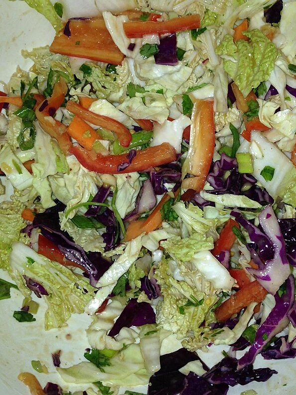

Salad

Asian Coleslaw
A great twist on cabbage salad. The peanut butter in the dressing is the secret.
Ingredients:
- 6 tablespoons rice wine vinegar
- 6 tablespoons vegetable oil
- 5 tablespoons creamy peanut butter
- 3 tablespoons soy sauce
- 3 tablespoons brown sugar
- 2 tablespoons minced fresh ginger root
- 1 ½ tablespoons minced garlic
- 5 cups thinly sliced green cabbage
- 2 cups thinly sliced red cabbage
- 2 cups shredded napa cabbage
- 2 red bell peppers, thinly sliced
- 2 carrots, julienned
- 6 green onions, chopped
- ½ cup chopped fresh cilantro
Steps:
- In a medium bowl, whisk together the rice vinegar, oil, peanut butter, soy sauce, brown sugar, ginger, and garlic.
- In a large bowl, mix the green cabbage, red cabbage, napa cabbage, red bell peppers, carrots, green onions, and cilantro
- Toss with the peanut butter mixture just before serving